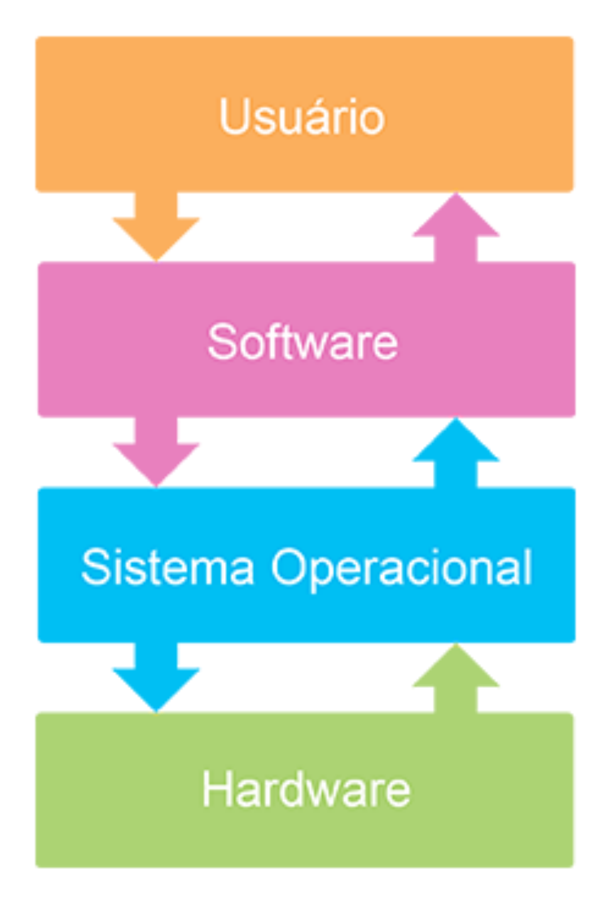

Processos
Exemplo de Linha de comando:

Um sistema operacional é um programa ou um conjunto de programas cuja função é gerenciar os recursos de sistema (definir qual programa recebe atenção do processador, gerenciar memória, criar um sistema de arquivos, etc.) oferecidos no aparelho móvel, fornecendo uma interface entre o aparelho e o usuário.
Há muitos tipos de Sistemas Operacionais, cuja complexidade varia e depende de que tipo de funções é provido, e para que computador esteja sendo usado. Alguns sistemas são responsáveis pela gerência de muitos usuários, outros controlam dispositivos de hardware como bombas de petróleo.
Outra das diferenças que podemos observar entre um sistema operacional e aplicações convencionais é a forma com que suas rotinas são processadas em função do tempo. Um sistema operacional não é executado de forma estruturada. Suas rotinas são executadas concorrentemente em função de eventos assíncronos. Em outras palavras, eventos que podem ocorrer a qualquer momento.
Um sistema operacional possui as seguintes funções:
Fonte: Wikipedia